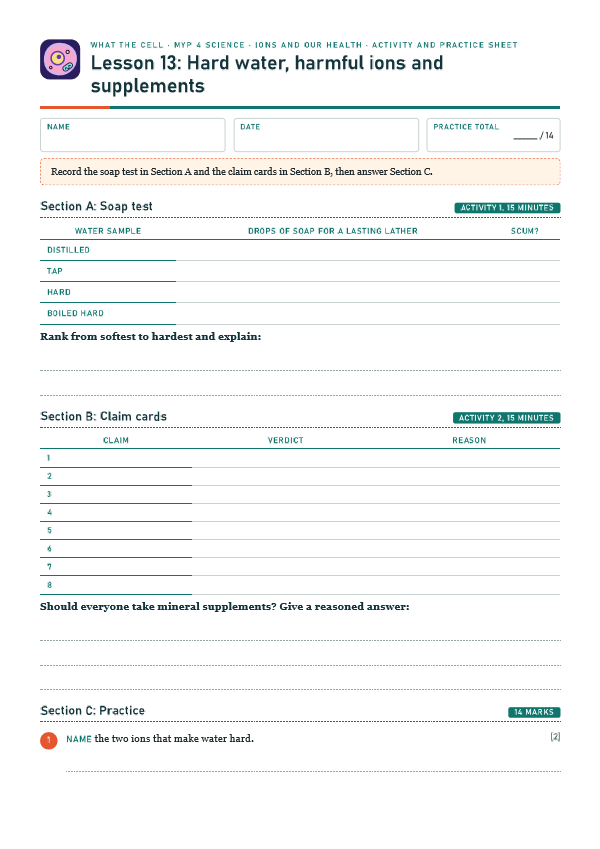

By the end of the lesson you can
- Explain what makes water hard
- Describe how hardness can be removed
- Describe the dangers of some ions in water
- Evaluate claims about mineral supplements
Keys: arrows or a presentation clicker move the slides, F for full screen. Slides with a red dot have a video or simulation.
Videos (all 5 minutes or less)
- 4:22
Hard and soft water
FuseSchool. While you watch: Which ions cause hardness? Slide 11.
Simulations
- Lab
Print and practise

Activity and practice sheet
Used in the lesson’s activities, with practice questions. Your teacher has the answers.
Download (PDF)Lesson 13 slides
All 16 slides in one file, to read again or print. The video buttons on the slides open YouTube.
Download the slides (PDF)Revising? The Revision tab on the unit page has the unit notes and review.
Class activity pack
Everything to print for the lesson’s activities: picture cards, sorting mats, station cards with their kit lists, and the teacher’s set-up notes. Print it before class.
Download the activity pack (PDF)Notes: Hard water, harmful ions and supplements
hard water
Water containing dissolved Ca2+ and Mg2+ ions. For example: water from chalk or limestone areas.
soft water
Water with few calcium or magnesium ions. For example: rain water.
limescale
Calcium carbonate left when hard water is heated. For example: in kettles and pans.
scum
Solid made when soap reacts with hard water. For example: on baths and sinks.
heavy metal ion
A toxic metal ion such as lead or arsenic. For example: old lead pipes.
supplement
A tablet that adds a nutrient to the diet. For example: iron tablets.
Key words
| hard water | contains Ca2+ and Mg2+ |
|---|---|
| soft water | few calcium or magnesium ions |
| limescale | calcium carbonate deposit |
| scum | solid from soap and hard water |
| ion exchange | swapping one ion for another |
| heavy metal ion | toxic ions such as lead |